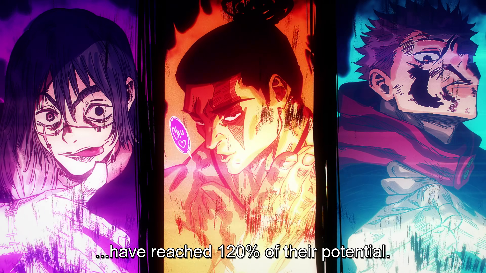
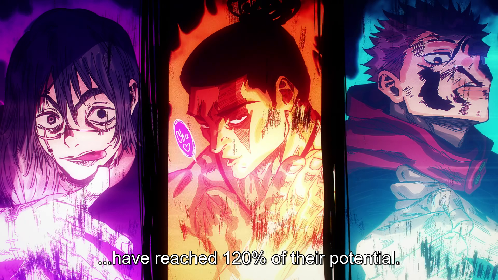

Valentines Site
Here Gojo is using his Hollow Purple against Toji Fushiguro
 Yuji Itadori finally accepts that he's like Mahito
Yuji Itadori finally accepts that he's like Mahito
 
All Three of them have reacher 120% of their potential

All Three of them have reacher 120% of their potential
 Sukuna prepares his attack against Jogo
Sukuna prepares his attack against Jogo
 Jogo prepares his attack against Sukuna
Jogo prepares his attack against Sukuna